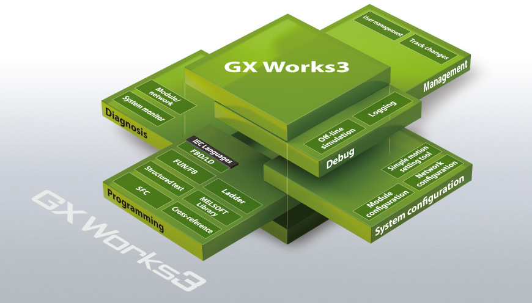
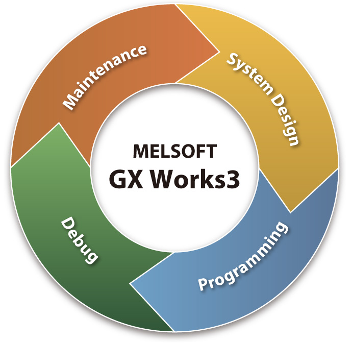
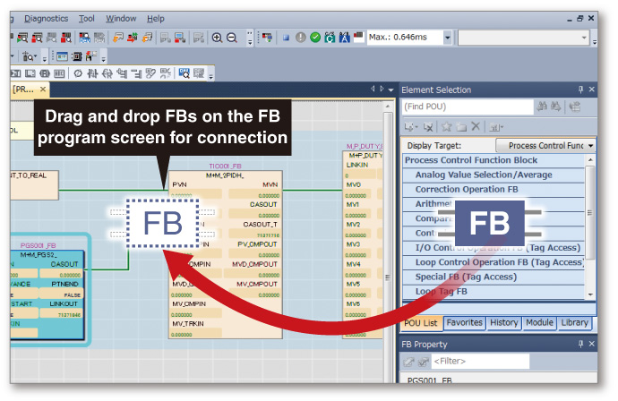
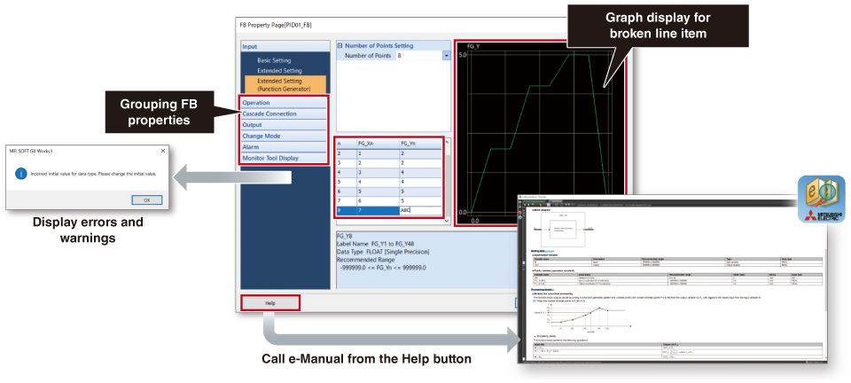
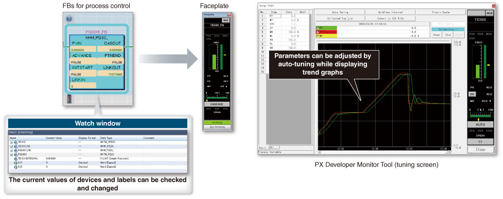

Kontrol Proses/Redundan Rekayasa

GX Works3 (Seri MELSEC iQ-R)
Satu Perangkat Lunak, Banyak Kemungkinan
GX Works3 terdiri dari berbagai komponen berbeda yang membantu menyederhanakan tugas pembuatan dan pemeliharaan proyek. Konsol desain sistem yang memungkinkan proyek dibuat pada tahap tinjauan sistem telah ditambahkan. Selain itu, bahasa pemrograman utama didukung dan labelnya (variabel) dibagikan, yang selanjutnya menyederhanakan pemrograman. Berbagai fitur debug dan pemeliharaan juga disertakan.

Rekayasa siklus hidup proyek
Berbagai fitur telah dikonsolidasikan ke dalam lingkungan rekayasa terpadu yang memungkinkan pembuatan proyek lebih mudah di seluruh proses rekayasa, memastikan konsistensi di setiap langkah.
Desain seluruh sistem
- Konfigurasi sistem yang mudah dengan perpustakaan komponen
- Registrasi parameter modul langsung
- Pengaturan modul gerakan sederhana yang terintegrasi
Berbagai bahasa pemrograman
- Sesuai dengan IEC 61131-3
- Mendukung bahasa pemrograman utama
- Konsistensi antara tab pemrograman yang berbeda
Mudah untuk di-debug
- Berbagai pemantauan online
- Simulator perangkat keras (emulator)
- Pencatatan data
Perawatan mudah
- Pemantauan sistem
- Diagnostik modul dan jaringan
- Komentar multibahasa

Membangun sistem kontrol proses dengan pemrograman yang mudah
- Perangkat lunak teknik GX Works3 menyediakan lingkungan pemrograman intuitif di mana program kontrol proses dapat dengan mudah dibuat dengan menghubungkan blok fungsi seperti Tag FB untuk kontrol proses di layar dengan operasi drag & drop
- Halaman properti FB memungkinkan pengaturan parameter visual Tag FB untuk kontrol proses
Pemrograman mudah dengan kontrol proses FB

Pengaturan sederhana menggunakan halaman properti FB

*Mendukung Tag FB yang disediakan oleh semua produsen dan Tag FB yang ditentukan pengguna.
- Tag FB untuk kontrol proses menyederhanakan penyesuaian startup sistem dengan mengaktifkan pemantauan pada pelat muka, tampilan tren pada PX Developer Monitor Tool, dan pengaturan parameter melalui penyetelan otomatis
Pemantauan dan penyetelan FB kontrol proses

- Tangga, diagram blok fungsi (pemrograman kontrol proses), bagan fungsi sekuensial, dan teks terstruktur didukung